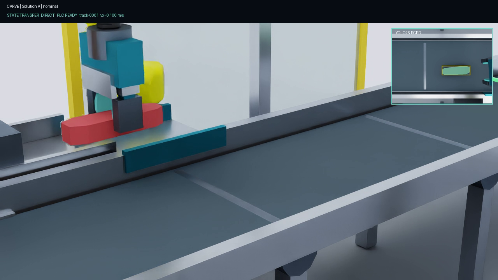
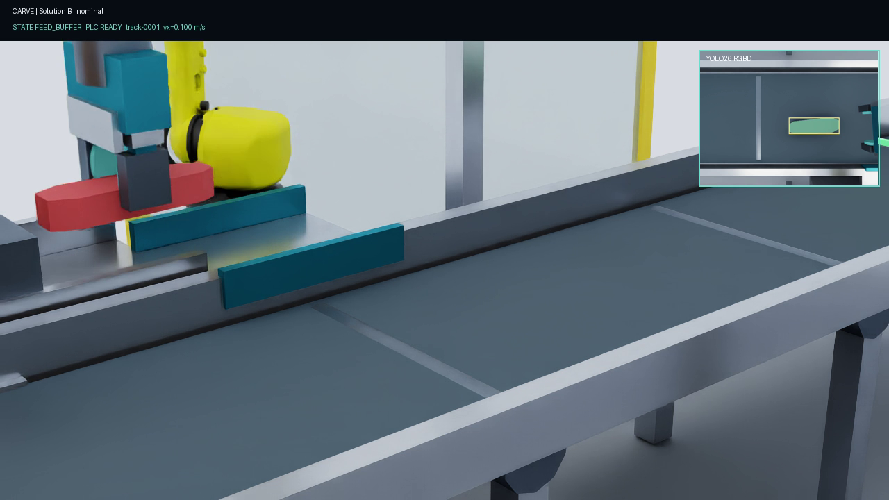

Isaac Sim robotics project
Intercept. Align. Deliver.
A complete Isaac Sim cell that sees moving products, predicts an intercept, picks them with a standard FANUC arm, and releases them into a stationary cutter-entry tray.

Isaac Sim6.0.1
Physics240 Hz fixed step
VisionYOLO26 segmentation
Delivery targetStationary cutter tray
RobotFANUC M-10iD/12 reference
Demonstrated speed0.06 to 0.22 m/s
The task is simple to say and hard to time.
Pieces of beef, pork, or chicken arrive on a moving conveyor. The cell must find each piece from camera images, estimate where it will be, intercept it without damaging it, and release it into a stationary tray at the cutter entrance.
The robot is not cutting the product. It presents a known pose to the cutter. The simulated PLC decides when the downstream machine is ready. If perception, grasping, timing, or machine readiness fails, the cell must stop safely, retry, or reject the piece.
See what each subsystem sees.
These are saved outputs from executed Isaac Sim runs. They are not diagram-only placeholders.

YOLO26 returns a product mask, bounding region, class, and confidence. Depth and calibration convert pixels into a belt-plane pose.
The moving product, standard arm, compact tool, conveyor, buffer, cutter tray, cameras, guards, and named stations coexist in one saved USD stage.

Aligned depth gives surface height and supports pose recovery. The raw metric array is also saved as NumPy data.

The compact tool approaches vertically, closes on the visible workpiece, lifts through contact, transports it, opens, and retracts.
All four views above come from the final Scene 2 implementation. Ground-truth product state is retained only as a test oracle. Robot decisions use the replaceable YOLO26 and RGBD observation interface.
Two complete cycles, with no hidden pickup.
Both recordings begin before perception and end after release and retract. The product moves with the conveyor until bilateral jaw contact. It then becomes a dynamic PhysX body. The program never writes its pose after grasp confirmation.
- Solution A
- 201 rendered frames
- Solution B
- 353 rendered frames
- Contact
- Bilateral in both runs
- Pose writes after grasp
- Zero
Boundary: this is real Isaac Sim integration evidence. The FANUC description, compact gripper, meat geometry, conveyor, buffer, and cutter station are reference models. They are not an OEM-certified or physically calibrated cell.
Executed speed and pose matrix
One cell. Five belt conditions.
The test matrix changes belt speed, lateral position, and product yaw. Every successful row begins with rendered RGBD, runs YOLO26, chooses a mask-interior grasp, commands the Isaac articulation, requires bilateral contact, and checks the cutter delivery.
High-speed transverse case: 0.22 m/s, -72 degrees
Open MP4

The geometric grasp classifier uses the YOLO instance mask. PCA estimates the undirected major axis. The selector keeps points near maximum boundary clearance, then chooses the most central safe point to reduce the lever arm during lift.
| Case | Speed | Start Y | Yaw | Grasp class | Timing error | Placement error | Result |
|---|---|---|---|---|---|---|---|
| Slow diagonal | 0.06 m/s | -60 mm | -35 deg | Diagonal right | 18.3 ms | 19.8 mm | Pass |
| Nominal longitudinal | 0.10 m/s | 40 mm | 0 deg | Longitudinal | 4.4 ms | 10.8 mm | Pass |
| Medium diagonal | 0.14 m/s | -30 mm | 32 deg | Diagonal left | 18.2 ms | 11.6 mm | Pass |
| Fast transverse | 0.18 m/s | 50 mm | 68 deg | Transverse | 7.6 ms | 10.4 mm | Pass |
| High-speed transverse | 0.22 m/s | -50 mm | -72 deg | Transverse | 16.0 ms | 11.2 mm | Pass |
| Solution B slip correction | 0.16 m/s | 30 mm | 28 deg | Diagonal left | 12.4 ms | 20.7 mm | Pass |
This demonstrates 0.06 to 0.22 m/s, -60 to 50 mm lateral offset, and -72 to 68 degrees in simulation. The launchers accept a wider configured range, but values outside this executed matrix are not claimed as validated.
Expected failure evidence
A recovery can pass without a delivery.
Pass means the commanded fault is detected, no false success is reported, and the controller reaches the expected known-safe state. These clips are separate executed Isaac runs.
Failed grasp
No bilateral contact. Open jaws, vertical retract, recover, idle.
Cutter unavailable
Contact is valid, but the cutter permissive is false. Release to reject and return idle.
Stale observation
Reject the expired plan before approach. The robot remains in a known state.
Emergency stop
Hold zero motion, enter safe stop, reset, open in a controlled way, return idle.
One closed loop, with clear boundaries.
Each block accepts a typed message, performs one job, and returns evidence that the next block can verify.
The loop closes through simulation state.
Robot motion changes the camera image. Conveyor physics changes the future intercept. Finger contact changes the grasp state. PLC readiness changes whether the robot may feed the cutter tray.
The system, part by part.
USD cell
Conveyor, product rigid bodies, robot base, arm, jaws, cameras, guards, reject area, buffer, cutter reference, and named frames.
- Input
- Scene configuration and seed
- Output
- Saved and reloadable USDA stage
Rendered sensing
Overhead and presentation cameras provide RGB, depth, intrinsic calibration, and camera-to-world transforms.
- Input
- Stage geometry, lighting, simulation time
- Output
- Timestamped RGBD and CameraInfo
Vision model
A replaceable interface runs YOLO26 segmentation. A pork-color connected-component refinement trims each YOLO proposal to the visible product. It cannot create a detection when YOLO returns none.
- Input
- Rendered RGB image
- Output
- Mask, class, confidence, pixel region
Pose and tracking
Depth and calibration recover planar position and yaw. Timestamped observations form stable tracks with velocity and uncertainty.
- Input
- Mask, depth, calibration, exposure time
- Output
- Track ID, pose, velocity, covariance
Interception
The predictor propagates the moving track to a feasible grasp window. The planner rejects stale or unreachable targets before commit.
- Input
- Track, belt speed, robot state
- Output
- Intercept pose, time, validity window
Robot controller
Preflight checks position, velocity, acceleration, work envelope, and exclusion geometry before sending fixed-step joint commands.
- Input
- Timed plan and measured joints
- Output
- Articulation actions and command evidence
Compliant grasp
Force-limited jaw drives provide an elastic deflection proxy. Bilateral PhysX contact confirms capture. Slip or loss causes correction or recovery.
- Input
- Finger targets, contact, joint effort
- Output
- Grasp state, force proxy, slip estimate
PLC and evidence
Machine-style I/O gates conveyor motion and cutter access. Every cycle writes state transitions, faults, outcomes, metrics, and replay data.
- Input
- Permissives, recipe, cutter phase, faults
- Output
- Acknowledgment, trace, metrics, terminal path
The controller runs a visible state machine.
- ObserveRender RGBD
- AcquireSegment product
- TrackEstimate velocity
- PredictFind future pose
- ReserveCheck robot and PLC
- ApproachPre-shape jaws
- InterceptMatch belt speed
- ConfirmRequire two contacts
- AlignUse cut_target_frame
- ReleasePlace in tray
- VerifyCheck pose and time
- RetractReturn safe
Any state can branch to a known recovery path for failed grasp, stale observation, cutter unavailability, buffer timeout, slip, or emergency stop.
Two handling strategies share the same core.
Solution ADirect transfer
Intercept on the moving conveyor, confirm the grasp, move directly to the cutter tray, align, release, verify, and retract.
- Lowest cycle complexity
- Requires downstream readiness before commitment
- Rejects when cutter access cannot be guaranteed
Solution BBuffered re-observation
Intercept, place on a stationary centering buffer, observe again, estimate slip, regrasp, align, and feed the cutter tray.
- Decouples pickup timing from cutter readiness
- Adds a second visual measurement
- Corrects measured buffer slip before feed
Control runs on measured state, not animation.
The fixed-step clock advances physics at 0.0041667 seconds. Joint targets are sampled from quintic trajectories. The controller checks limits before dispatch and records commanded and measured motion.
During interception, the tool follows the predicted product pose and matches conveyor speed at contact. During closure, both finger sensors must report recent contact. A failed contact confirmation cannot become a successful grasp.

Compliance is modeled as a bounded mechanism.
The rebuilt Scene 2 tool has an enclosed drive housing, two guided carriages, broad rounded pads, force-limited drives, elastic deflection, and contact sensors on both jaws. It is a useful control proxy for jaw compliance. It is not a deformable meat model or a pressure validation.
- Closure setpoint
- 50 N reference
- Effort limit
- 70 N reference
- Compliance proxy
- 0.00016 m/N
- Contact gate
- Both jaw sensors
Inputs and outputs are explicit.
Inputs to the cell
- Rendered RGB and metric depth
- Camera intrinsics and calibrated transforms
- Conveyor speed and fixed simulation time
- Product recipe, dimensions, mass, and compliance proxy
- Measured robot joints and finger contacts
- Cutter ready, phase, permissive, fault, and emergency stop
Outputs from the cell
- Instance mask, confidence, product pose, and class
- Track identity, velocity, covariance, and predicted intercept
- Time-parameterized joint commands and gripper targets
- Grasp confirmation, force proxy, slip, and loss state
- Feed request, result acknowledgment, fault, and recovery state
- USDA stage, images, depth arrays, JSONL traces, metrics, and video
| Message | Key fields | Producer | Consumer |
|---|---|---|---|
| ObjectObservation | mask, pose, confidence, exposure time | Vision adapter | Tracker |
| ObjectTrack | track ID, pose, velocity, covariance | Tracker | Predictor |
| InterceptionPlan | pose, contact time, commit time, validity | Planner | Supervisor and motion |
| GraspState | left contact, right contact, force proxy, slip | Gripper adapter | Supervisor |
| CutterState | ready, phase, permissive, fault, emergency stop | PLC model | Supervisor |
| CellResult | terminal path, errors, violations, timestamps | Evaluator | Logs and replay gate |
What the final integrated runs proved.
Fresh evidence lives under results/scene2_final. Each nominal run loaded the complete Scene 2 cell, inferred from rendered pixels, controlled the FANUC articulation, made physical contact, delivered to the cutter-entry tray, wrote a trace, saved video, and passed a fail-closed audit.
Solution A
seed 2601 nominal- Cutter position error
- 10.31 mm
- Cutter angle error
- 0.119 deg
- Delivery timing error
- 25.00 ms
- Physical lift
- 177.93 mm
- Max product to TCP distance
- 70.10 mm
Solution B
seed 2601 nominal- Cutter position error
- 20.93 mm
- Cutter angle error
- 0.481 deg
- Delivery timing error
- 16.67 ms
- Buffer RGBD oracle error
- 6.52 mm
- Max product to TCP distance
- 79.51 mm
The forced failure cycles are expected test cases, so their terminal paths are not a production yield estimate. Accuracy is simulation-only and has not been tuned against real product or hardware. The final clean suite is results/full_suite/20260827_045748119 and reported 147 Python tests passed plus current FANUC setup, ROS, compliance, A, and B gates.
What is complete, and what is not.
Integrated Scene 2 complete
Rendered RGBD now flows through YOLO26, tracking, prediction, timed interception, the FANUC articulation controller, bilateral contact, Cartesian transport, cutter-frame alignment, PLC I/O, release, verification, and recovery for A and B.
Evidence is fail-closed
The audit checks stage contents and reload, video size and hash, rendered sensors, YOLO identity, command counts, limits, contacts, lift, retention, state sequence, delivery accuracy, and the terminal trace.
External integration boundary
The internal Lula IK and Isaac articulation path is complete. A standard ROS 2 JointTrajectory subscriber and simulation-clock sampler are implemented. A live MoveIt FollowJointTrajectory action was not executed because control_msgs and MoveIt are not installed on this machine.
Simulation assumptions are part of the result.
This project proves software integration and repeatable simulated behavior. It does not prove production performance.
- Product geometry is a rigid or parameterized reference, not measured deformable tissue.
- Friction, compliance, grip force, and slip thresholds need bench data.
- The FANUC asset is an official-description reference, not an OEM-certified digital twin.
- The gripper, conveyor, cutter, guarding, and trays are project reference models.
- YOLO26 was trained on synthetic Isaac imagery and needs real annotated data.
- No food-safety, hygienic-design, machine-safety, or real-cell risk validation is claimed.
Run the evidence from one command.
All commands run from the repository root. Isaac Sim lives at C:\Users\jainl\is6. Each launcher closes its simulator process after completion.
Validate setup
.\validate_setup.ps1Solution A, full FANUC cycle
.\run_solution_a.ps1Solution B, full FANUC cycle
.\run_solution_b.ps1Speed and pose matrix
.\run_speed_pose_matrix.ps1 -IncludeSolutionBBoth solutions
.\run_scene2_full.ps1Complete suite
.\run_tests.ps1